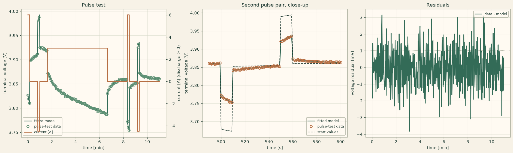

Docs › Examples › Equivalent-circuit battery identification
Batteries · 0D
Equivalent-circuit battery identification
Series resistance and RC branch of a lithium-ion equivalent-circuit model identified from the terminal voltage of a pulse test.
Run locally with OneSimulation. The example downloads are free. Running them requires an activated runtime. OneSimulation 1.0 · CPython 3.13 on macOS (Apple Silicon), Ubuntu 22.04 (x86-64), and Windows x64. Installation and activation · View pilot plans. Scope of the reference checks.


What it computes
OneSimulation solves the equivalent circuit (open-circuit voltage source, R0, R1 || C1, current load) with its circuit solver inside a SimulationStudyService, whose Levenberg-Marquardt least-squares fit adjusts R0, R1 and tau1 to the voltage and returns their covariance; every residual evaluation is a real circuit run. The data are synthetic: 1 mV noise.
What it checks
From a start at twice R0, 0.4 R1 and 2.7 tau1, 28 circuit runs recover R0 = 15.015 +/- 0.032 mOhm, R1 = 9.966 +/- 0.036 mOhm and tau1 = 30.18 +/- 0.24 s (true 15, 10, 30), all within one standard error; residuals 1.04 mV rms.
The notebook
The complete notebook, cell by cell. Run it to produce the figures and the comparison printout.
Equivalent-circuit models describe a battery cell without any knowledge of its internal chemistry: a voltage source for the open-circuit voltage \(U_\mathrm{OCV}(s)\) as a function of the state of charge \(s\), a series resistance \(R_0\) for the instantaneous (ohmic) response, and resistor-capacitor branches for the slower polarisation. With one branch,
with the current \(I\) positive on discharge, the capacity \(Q\) and the relaxation time \(\tau_1=R_1C_1\). A pulse test (current pulses with rests in between) separates the parameters: the voltage jumps at the pulse edges give \(R_0\), the slow relaxation after them \(R_1\) and \(\tau_1\).
OneSimulation solves the circuit (voltage source, \(R_0\), the \(R_1C_1\) branch, current load) with its circuit solver. The SimulationStudyService turns it into a least-squares problem: fit runs the circuit for trial values of \((R_0,R_1,\tau_1)\), forms the voltage residuals divided by the noise level and minimises their sum of squares with the Levenberg-Marquardt method. It returns the estimates with their linearised covariance in physical units.
Reference. G. L. Plett, Battery Management Systems, Vol. I: Battery Modeling, Artech House 2015, ch. 2; the pulse test follows the hybrid pulse power characterisation idea of the FreedomCAR Battery Test Manual (INL 2003). The data are synthetic: generated by the same circuit from the "true" values \(R_0=15\) mΩ, \(R_1=10\) mΩ, \(\tau_1=30\) s with normally distributed noise of 1 mV. A correct identification recovers these values within the uncertainty the noise allows and leaves residuals of the size of the noise.
import numpy as np
from onesim.physics.systems import (
Circuit,
CircuitCapacitor,
CircuitCurrentSource,
CircuitResistor,
CircuitVoltageSource,
)
from onesim.simulation.studies import SimulationStudyService, StudyParameter
from onesim.visualization import plots, theme
theme.set()Cell and pulse test
A 3 Ah cell, starting at 80 % state of charge. The test applies a 10 s discharge pulse at 2C (6 A), 40 s rest, a 10 s charge pulse at 1.5C, 40 s rest, then the same at a lower state of charge after a 300 s discharge at 1C; the voltage is sampled every second. The open-circuit voltage curve is taken as known (measured beforehand).
capacity, start, noise = 3.0 * 3600.0, 0.80, 1e-3
open_circuit = lambda s: 3.45 + 0.55 * s + 0.08 * np.log(s / (1.0 - s)) / 4.0
steps = np.array(
[
(0, 6.0),
(10, 0.0),
(50, -4.5),
(60, 0.0),
(100, 3.0),
(400, 0.0),
(500, 6.0),
(510, 0.0),
(550, -4.5),
(560, 0.0),
]
)
load = lambda t: steps[np.searchsorted(steps[:, 0], t, side="right") - 1, 1]
times = np.arange(0.0, 661.0, 1.0)
state = start - np.r_[0.0, np.cumsum([load(t) for t in times[:-1]])] / capacity
print(
f"state of charge from {state[0]:.3f} to {state[-1]:.3f}, open-circuit voltage from {open_circuit(state[0]):.4f} V to {open_circuit(state[-1]):.4f} V"
)Circuit model
pulse_test(values) builds the circuit for one parameter set; the voltage source follows the open-circuit voltage along the coulomb-counted state of charge.
pulse_test = lambda values: Circuit(
components=(
CircuitVoltageSource(
name="ocv",
positive="p",
negative="0",
voltage=lambda t: open_circuit(np.interp(t, times, state)),
),
CircuitResistor(
name="r0", positive="p", negative="a", resistance=1e-3 * values["r0"]
),
CircuitResistor(
name="r1", positive="a", negative="t", resistance=1e-3 * values["r1"]
),
CircuitCapacitor(
name="c1",
positive="a",
negative="t",
capacitance=values["tau1"] / (1e-3 * values["r1"]),
initial_voltage=0.0,
),
CircuitCurrentSource(name="load", positive="t", negative="0", current=load),
)
)
study = SimulationStudyService(
(
StudyParameter("r0", 1.0, 50.0),
StudyParameter("r1", 1.0, 50.0),
StudyParameter("tau1", 2.0, 200.0),
),
pulse_test,
lambda circuit: {f"u_{i}": u for i, u in enumerate(circuit.voltages["t"])},
solve=lambda circuit: circuit.solve(times=times, max_step=0.25),
)Synthetic measurements
The true circuit is run once and normally distributed noise of 1 mV is added (fixed seed).
true = {"r0": 15.0, "r1": 10.0, "tau1": 30.0}
rng = np.random.default_rng(2026)
clean = study.sweep(combinations=[true]).runs[0].measurements
data = np.array([clean[f"u_{i}"] for i in range(times.size)]) + rng.normal(
0.0, noise, times.size
)Identification
Bounds: resistances between 1 and 50 mΩ, relaxation time between 2 and 200 s. Levenberg-Marquardt starts at \(R_0=30\) mΩ, \(R_1=4\) mΩ, \(\tau_1=80\) s.
start_values = {"r0": 30.0, "r1": 4.0, "tau1": 80.0}
fit = study.fit(
residuals=lambda m: np.array(
[(m[f"u_{i}"] - data[i]) / noise for i in range(times.size)]
),
start=start_values,
method="levenberg_marquardt",
maximum_runs=100,
)Comparison with the true values
Standard errors from the linearised covariance, scaled with the residual variance.
print(
f"{fit.run_count} circuit simulations (including the data run), converged: {fit.converged}, rank {fit.rank}, "
f"χ² = {fit.residuals @ fit.residuals:.1f} for {fit.degrees_of_freedom} degrees of freedom"
)
print("parameter estimate ± standard error true deviation")
for name, unit in (("r0", "mΩ"), ("r1", "mΩ"), ("tau1", "s")):
print(
f"{name:8s} {fit.parameters[name]:10.4f} ± {fit.standard_errors[name]:.4f} {unit:2s} {true[name]:8.2f} "
f"{(fit.parameters[name] - true[name]) / fit.standard_errors[name]:+6.2f} σ"
)
correlation = fit.covariance / np.sqrt(
np.outer(np.diag(fit.covariance), np.diag(fit.covariance))
)
print(
f"correlations: R0-R1 {correlation[0, 1]:+.2f}, R0-τ1 {correlation[0, 2]:+.2f}, R1-τ1 {correlation[1, 2]:+.2f}; "
f"rms voltage residual {1e3 * noise * np.sqrt(np.mean(fit.residuals ** 2)):.3f} mV (noise {1e3 * noise:.1f} mV)"
)Figure
The measured and fitted terminal voltage with the current profile; a close-up of one pulse, where the instantaneous jump (\(R_0\)) and the relaxation (\(R_1\), \(\tau_1\)) separate; and the residuals (dotted: ± the noise level).
fitted, first = (
np.array([run.measurements[f"u_{i}"] for i in range(times.size)])
for run in study.sweep(combinations=[dict(fit.parameters), start_values]).runs
)
fig = plots.figure(1, 3, size=(17, 5))
plots.line(
times / 60,
{"fitted model": fitted},
points={"pulse-test data": (times[::4] / 60, data[::4])},
right={"current [A]": np.array([load(t) for t in times])},
xlabel="time [min]",
ylabel="terminal voltage [V]",
right_label="current [A] (discharge > 0)",
title="Pulse test",
legend="lower left",
ax=fig[0],
)
window = (times >= 490) & (times <= 600)
plots.line(
times[window],
{"fitted model": fitted[window]},
points={"pulse-test data": (times[window], data[window])},
reference={"start values": first[window]},
xlabel="time [s]",
ylabel="terminal voltage [V]",
title="Second pulse pair, close-up",
legend="lower right",
ax=fig[1],
)
plots.line(
points={"data - model": (times / 60, 1e3 * (data - fitted))},
hlines=[1e3 * noise, -1e3 * noise],
xlabel="time [min]",
ylabel="voltage residual [mV]",
title="Residuals",
legend="upper right",
ax=fig[2],
)
plots.show()Going further
Add a second RC branch with a longer relaxation time and refit: with these data its parameters stay poorly determined, which the covariance shows at once. Make the resistances functions of the state of charge, or fit the open-circuit voltage curve as well from a slow (C/20) discharge. Real cycler data replace the synthetic data array directly.